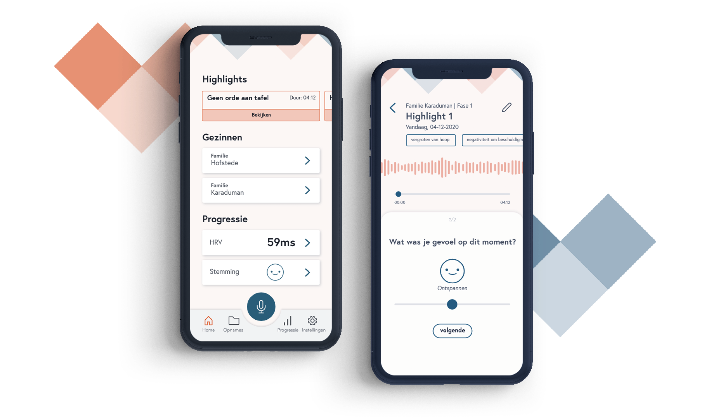

A digital reflection tool for child protection officers
Tools
Sketch, Adobe XD, Figma, Notion
Role
UX Design, User Research, Prototyping
Date
Sept 2020 - Jan 2021
Digital reflection tool for Child Protection Officers
Social workers specialized in child protection (CP social workers) are responsible for helping dysfuntional families. They map out where the bottlenecks within the family lies and seeks for the right help. Their goal is ensuring welfare and wellbeing of the children.
Due to the increased workload of CP social workers, they hardly get to self-reflection. Also, the obstruction caused by current reflecting tools are experienced as time consuming and not insightful. These methods consist of booklet paper forms (known as the case-note) being used during supervisions. However, in the current state due to the high demanded workload there isn’t much room for self reflection.
Joi provides insights for the CP social workers on troubled situations after consults with families, in order to reflect quickly and insightfully on their actions. This works through an application that makes it possible to record audio clips and via sensors - smartwatch to measure stress that occurs during a counsil. With this collected data, they can quickly contribute input during supervisions with their collegues, supervisors or experts.